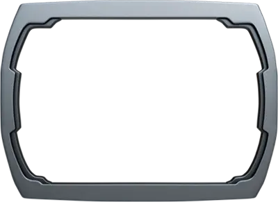
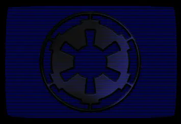

Сообщество


Приветствую, джентельство! Вижу, вы уже неплохо освоились. Довелось ли вам полюбоваться достопримечательностями нашей прекрасной столицы — подлинной сокровищницы культуры Центральных Миров? Убедились ли вы в мощи, величии и незыблемости Нового Порядка? Сказать по правде, удивлен, что вы всё еще живы... но неважно. Отсюда вы можете прогуляться к южным вратам старого города, где расположены Дворцовый сад и Старый форум, чтобы оставить сообщение в общественном терминале или прочесть сообщения других гостей столицы. Либо вы можете сесть на магнитоплан, который за считанные минуты домчит вас до космопорта Корборо-2, откуда совершаются регулярные рейсы к Рескорду и внешним системам. Так или иначе, я не прощаюсь с вами, джентельство.